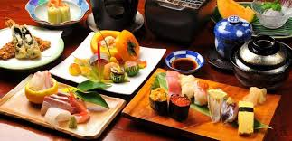

BIENVENIDOS A EMPRENDE
ESTA SEMANA LO MEJOR DE LA GASTRONOMIA JAPONESA
Emprende es un portal donde nos dedicamos a conocer y evaluar diversas propuestas de emprendedores, que presentan grandiosas opciones creativas en el area gastronomica,por eso queremos regalarles una maravillosa oportunidad para degustar al mejor estilo japones ,poseen una carta con alternativas que mantienen a muchos en el disfrute, asi que aqui les dejamos un abreboca en referencia a nuestra recomendacion de esta semana.
La gastronomía de Japón como cocina nacional ha evolucionado, a través de los siglos, a causa de muchos cambios políticos y sociales, comenzando por la Edad Antigua, en la que la mayoría de la cocina estaba influenciada por la cultura china. Finalmente, la cocina cambió con el advenimiento de la Edad Media que marcó el comienzo de un abandono del elitismo con la normativa del shogunato. Al principio de la Edad Moderna tuvieron lugar grandes cambios que introdujeron en Japón la cultura occidental.
Fuente:https://https://es.wikipedia.org/wiki/Gastronom%C3%ADa_de_Jap%C3%B3n.png)
HONNEY MAKI SUSHI DELIVERY
Este emprendimiento es iniciado por una familia extrangera que llego al pais despues de salir de su zona de confort, arriesgandose al cambio esta pareja conformada por una Administradora de profesion con experiencia en el area de restaurantes y un chef quien por años se dedico a construir de forma estetica y con un alto margen de calidad, productos para sus empresas empleadoras, hasta que despues de recibir por parte de sus contratantes un finiquito inesperado a consecuencia de la reciente pandemia, por lo que no dudaron es mostrar con fuerza solucion a sus inquietudes absolutamente logicas despues de perder parte de su estabilidad, la opcion de aperturar este gran proyecto independiente y aunque muchos por su ramo o competencias declinaron en aconcejarles buscar mejores opciones se aventuraron a sacrificar su tiempo y esfuerzos por verlo crecer, Asi nace Honney Maki Sushi Delivery.
Iniciamos contandoles sus productos son elegidos con todo el cuidado y mesura posibles para brindarles un producto de calidad , y aunque en el ramo hay muchas opciones visibles a precios inferiores sus platos son un equilibrio entre calidad precio inigualable , ya que probar sus diversas combinacines y sumado a esto como valor recibir un excelente servicio no es mas que una exquisitez, en tiempos como estos donde de manera recurrente observamos la necesidad de muchos de estar en el campo de batalla pero sin contar con las herramientas o conocimientos pertinentes, y si bien es cierto tenemos libre mercado , todos tenemos la necesidad de ver bien invertido nuestro dinero a momento de disfrutar una adquisicion de calidad sea cual sea el bien.
Entre las opciones que nos ofrecen podemos encontrar desde ensaladas , cortes de salmon rellenos, gyozas, sushi pizzas ,rolls frios , rolls calientes y las mas buscadas opciones de rolls premiums muy buenas combinaciones con preparaciones especiales de la casa.
Asi que los invitamos a probar esta grandiosa opcion que rompe con la rutina de lo conocido , y si haces click en nuestro enlace podras gozar de un DESCUENTO ESPECIAL por este mes,
